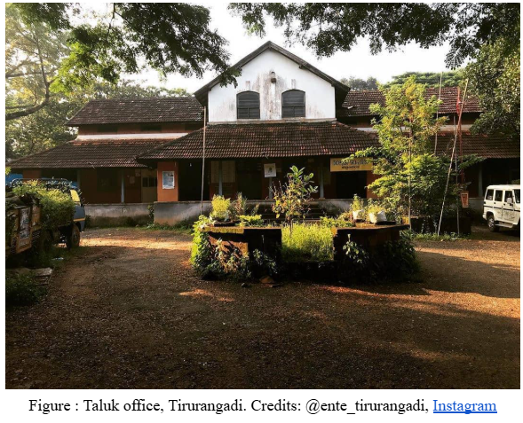
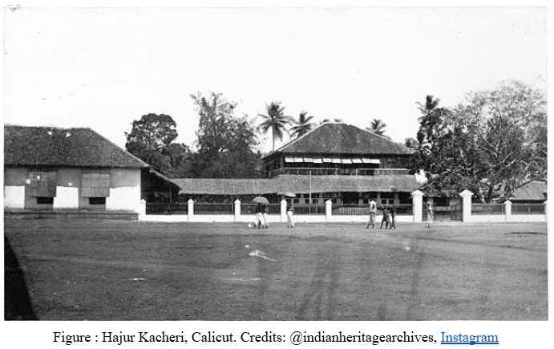
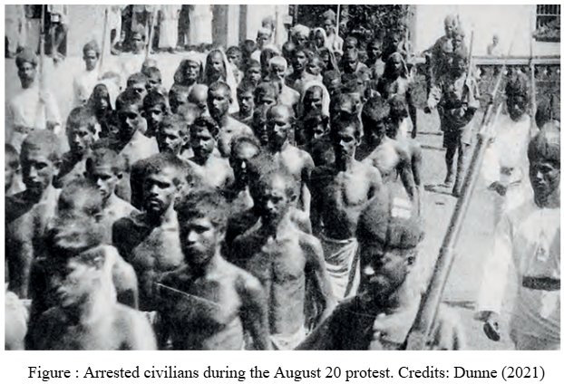

In every part of the Malabar you can see some signs of freedom struggle, for Tirurangadi it is Hajur Kacheri, an anglo-indian structure that now converted as district heritage museum, it is more than a museum for the native people, a living memory of mappila rebellion in 1921, an popular uprising against British raj and feudal system that present in the area at that time, that took lives of thousands of mappila rebels.
In the colonial times this building was used for administrative purposes, as court and jail, after the independence also its remained as the administrative node of the Tirurangadi taluk, but in 2023 the state government decided convert this building into district heritage museum, for enabling historians, students and other peoples to learn about history and heritage of the Malappuram district.

Taluk Office, Tirurangadi
Prasad KP (2023) reports that the museum have four sections, the first section is narrating about the evolution of district since the inception in 1969, the second section is a poetic journey through the history of area from the Indian independence to the inception of the district, the third section is telling the visitors about historic era between 1498 and 1947, the last section is helping the visitors to explore about the history of the area before 1498.
The museum has daily visitors, mostly school and college students, earlier it used to be free to enter the museum, but recently the museum directorate notified to collect entry fee, this decision reduced the number of visitors.
Manorama Online (2025) reports that earlier there were days when up to three hundred people visited the museum, now only twenty to twenty five people are coming. People have started protesting against the entry fee.

Hajur Kacheri, Calicut
The Britishers also built a similar Hajur Kacheri in Calicut, but later it was demolished for building a new LIC building. Jidhu (2014) explains that Hajur Kacheri in the Calicut, which served as administrative building, was an excellent specimen of anglo-indian architecture in the British ruled Malabar.
During the Malabar rebellion in 1921, on August 20, the British army fired at the protesting civilians against illegal entry of the British army to Mambram mosque, sufi shrine of Mambram Thangal, who guided the civilians devotionally and politically.
The firing caused the death of the protestors, a lot of them got arrested, this triggered civilians to attack the Hajur Kacheri, in this attack two British police officers died and the members of the Khilafat movement took over this place and they used it as their headquarters.

Arrested civilians during the August 20 protest
Dunne (2021) highlights that due to a smaller army, the British had to retreat. The British came with more armies and conquered the building from Khilafat leaders.
The Hajur Kacheri played a significant role in administration in both the British and post-independence era, in this era the museum is narrating the history of the district and stays as living memory of the Malabar revolt.
The Mambram Mosque still remains as a significant religious centre for Muslim community and a node for several festivals of both Muslim and Hindu Community.
References
Prasad KP, V. (2023). Malappuram heritage museum unveils rich tapestry of the past.
Manorama Online Reporter. (2025). Hajur Kacheri Museum in Tirurangadi introduces visitor fees.
Jidhu, M. U. (2014). Architecture in the urban space: Life of the elite in colonial Calicut.
Dunne, T. (2021). The Leinster Regiment and the Malabar Rebellion of 1921.